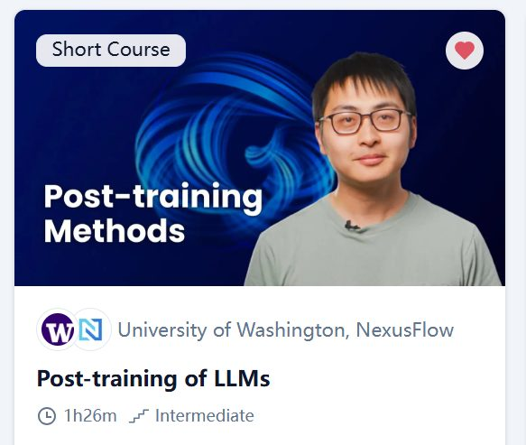
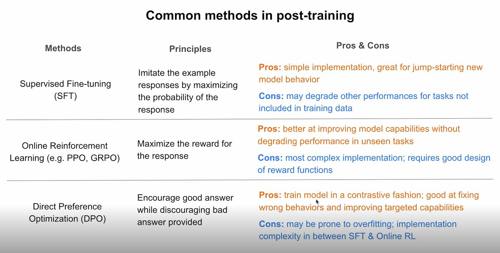
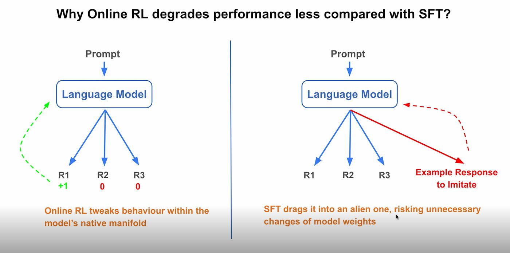
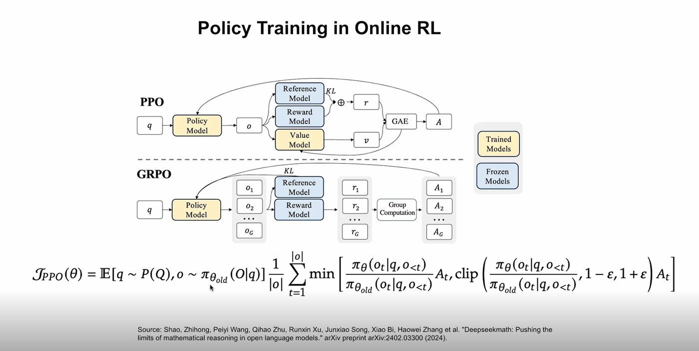

Learning Record 06
Post-training of LLMs

网站：Post-training of LLMs - DeepLearning.AI
总体来说：这份课程还是很有价值的，特别是对于初学者而言，我们一贯只是了解各种可能用到的算法的大致原理，但基本没看过一个真正的训练流程是怎么样的。本教程中虽然很多训练仍然是用超小模型，有时甚至训练只是作为流程展示的一部分，而没有非常深入，但对于想要更好地了解这些东西的人来说，也已经非常有帮助了。此外，本课程关于很多原理/常识的讲解也是非常易于理解且富有深度，很多slide我都截屏下来感觉非常有帮助，能够把一个方面说得很清楚
具体来说：主要学习了三种后训练的方法，SFT , DPO（direct preference optimization）, online RL（PPO and GRPO（两种算法在一节课提了，演示主要是演示GRPO）），关于PPO的很多原理这里我得到了很好的理解，但是对于PPO和GRPO的具体优化流程（掉包内部的细节）我还是有很多不了解的，原理公式也没有自己完全推导，主要是总览能够接受

对全课的一个总结

结尾富有深度的比较

Online RL 包括PPO的Policy Model优化目标公式 但是对于Critic的优化我还不是很懂
图片太多了，最后我收集到一个文件夹重新组织了
地址:"C:\Users\29169\Desktop\Interesting sources\Post-training of LLMs Slides.pdf"
总结：很希望自己有机会能亲手训模型，我现在的笔记本其实也有GPU，但似乎显存不够（我现在对于这个空间还不是很有概念），CPU训似乎又很慢